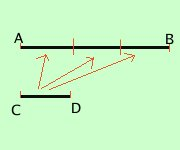
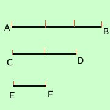

Grandezze commensurabili
Diremo che due grandezze sono fra loro commensurabili se e' possibile individuare la misura di una grandezza rispetto all'altra
Definiamo misura di una grandezza ripetto ad un'altra il numero di volte che la prima grandezza contiene la seconda
(cioe' il rapporto fra la prima e la seconda grandezza)
Sono possibili due casi
-

La prima grandezza contiene la seconda un numero intero di volte
In tal caso la misura della prima grandezza rispetto alla seconda e' data dal numero di volte che la prima grandezza contiene la seconda
in figura la misura del segmento AB rispetto al segmento CD vale 3
Il segmento AB si dice multiplo di CD
il segmento CD si dice sottomultiplo di AB
la misura di AB rispetto a CD e' un numero intero
-

La prima grandezza non contiene la seconda un numero intero di volte
In tal caso occorre cercare una terza grandezza che sia contenuta esattamente sia nella prima che nella seconda (sottomultipla comune)
allora la misura cercata sara' il rapporto fra le misure della prima grandezza rispetto alla terza e la seconda grandezza rispetto alla terza
In figura la terza grandezza e' contenuta tre volte nella prima e due volte nella seconda quindi:
AB__
----- =
CD__ |
-------------------
|
3
= -----
2 |
In questo caso la misura di AB rispetto a CD sara' un numero razionale
Ragionando con il senso comune bastera' prendere come terza grandezza una grandezza abbastanza piccola ed allora sara' sempre possibile trovare una sottomultipla comune; pero' il senso comune non sempre e' esatto; anzi dimostreremo nella prossima pagina che vi sono segmenti per cui non e' possibile trovare una sottomultipla comune
|